The Hell Knight is a fearsome and relentless tank, known for their unparalleled offensive power and dark abilities that weaken and torment their enemies. With a perfect balance of defense and aggression, the Hell Knight thrives in chaotic battles, unleashing curses and debuffs to disrupt opponents while maintaining a high level of survivability. A menacing force on the battlefield, the Hell Knight draws power from fear and destruction to dominate any foe in their path.
Switch StanceNew
Transformation skill
Leaves the Inquisitor / Vanguard / Golem Armor stance (15 sec. cast).
VanguardNew
Tank hunting stance with your own weapon and shield. Tank stance: P. Atk. +30%, P. Def. / M. Def. -30%, PvE damage +1% per 500 Max HP above 8000 (max +50%), damage to players -90%. Only the stance skills can be used. Entering removes Ultimate Defense, Song of Protection, Angelic Archon, mirrors, Shield Deflect Magic, Majesty and Shield Song. Only out of combat (15 sec. cast). Switch Stance (15 sec.) to return.
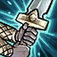
Vanguard StrikeLv. 43New
Transformation skill
Inflicts a powerful blow on the enemy with 992 power. Ignores Shield Defense. Critical. Over-hit.
Vanguard SweepLv. 43New
Transformation skill
Swings a weapon to attack nearby enemies with 893 power. Ignores Shield Defense. Critical. Over-hit.
Aegis Stance
Enables Shield Defense for attacks from all directions. Shield Defense -30%.
AggressionLv. 54
Provokes the selected target into attacking you. Power 3928. The skill cooldown is fixed.
Base success rate: Guaranteed
Aggression AuraLv. 42
Provokes nearby enemies into attacking you. Power 4312. The skill cooldown is fixed.
Base success rate: Guaranteed
Avenger's Aura - Faith
Allies are rallied around Sigel Hell Knight.
<font color="ECECEC"><Aura of Faith></font> For you and your party members, P./ M. Atk. +5%, P./ M. Def. +15%, Damage Reflection +5%, all received Critical Damage -10%, P./ M. Skill Cooldown -3%. Only one <font color="ECECEC">Aura of Faith</font> can be active at a time. Drains HP while active.
Black-thorned Chain StrikeLv. 18
Black thorns attack the target and enemies along the way, pulling them to you and blocking their P. skills for 5 sec. Deals damage equal to 5% of your P. Atk. Recovers 5% HP. Requires a sword or a blunt weapon.
Base success rate: 60% Attack type: Silence (Magic)
Challenge of FaithLv. 6
Challenges and provokes nearby enemies. Increases your P./ M. Def. for 15 sec. The skill cooldown is fixed.
Base success rate: Guaranteed
Combat AuraLv. 3
For 20 min., party member's P. Atk. +3%, Atk. Spd. +3%.
Damage ReflectionLv. 3
For 20 min., reflects 5% of received damage back to the enemy.
Deflect ArrowLv. 4
For 20 min., Bow Resistance +16%, Crossbow Resistance +8%.
Deflect Magic
For 20 min., M. Damage Resistance +100%.
Drain HPLv. 53
Inflicts dark damage on the target with 20 power. Absorbs 20% of inflicted damage as HP.
Fortitude
Confusion Resistance +30. MP Consumption depends on your level.
HamstringLv. 19
For 1 min., the enemy's Speed -30%.
Base success rate: 70% Attack type: Slow (Magic)
Hell ScreamLv. 6
Lets out a powerful roar inflicting Fear on the enemies and forcing them to flee. For 8 sec., their P. Def. -30%, M. Def. -30%, Speed -30%.
Base success rate: 60% Attack type: Fear (Magic)
HorrorLv. 18
Inflicts Fear on the enemy forcing them to flee for 6 sec.
Base success rate: 70% Attack type: Fear (Magic)
Iron Shield
Increases Shield Defense with a certain chance when attacked.
Iron WillLv. 3
For 5 min., M. Def. +5%. Only one of Attack Aura, Defense Aura, Spirit Barrier, Sprint and Iron Will at a time. Cooldown 6 min.
JudgmentLv. 15
Deals Dark damage to the target with 1056 power. For 30 sec., the target's Critical Damage for basic attacks -25%, Melee Weapon Resistance -12. Requires a sword, a blunt weapon or dual swords. Critical. Over-hit.
Base success rate: 70%
Life ScavengeLv. 15
HP Recovery from absorbing residual life energy from a corpse.
MajestyLv. 3
For 5 min., P. Def. +7%, P. Evasion -2.
Noble Sacrifice
The Knight sacrifices themselves for their allies. For 10 sec., you take 30% of the damage received by your party members. Applies the Last Patience effect that does not let HP drop below 1.
Physical Mirror
For 5 min., reflects physical buffs/ debuffs with 30% probability and magic buffs/ debuffs with 10% probability. Requires a shield.
Relax
While sitting, recovers HP, MP and CP quickly. Can not be used in combat. Consumes 10 Relax Holy Water.
ShackleLv. 15
Provokes the enemy to attack, then immobilizes them for 10 sec.
Base success rate: 70% Attack type: Hold (Magic)
Shield Deflect MagicLv. 4
For 8 sec., transfers magical damage back to the enemy caster.
Shield FortressLv. 6
Increases Shield Defense by 446. Continuously consumes MP proportionately to your level.
Shield SlamLv. 6
Attacks the enemy with the shield preventing them from using P. skills for 1 min. Cancels the enemy's target. Requires a shield.
Base success rate: 70% Attack type: Silence (Magic)
Shield StrikeLv. 30
Attacks the enemy using a shield with 833 power, and provokes the enemy. Requires a shield.
Shield StunLv. 57
Uses a shield to shock the enemy. Inflicts Stun on the target for 3 sec. Requires a shield.
Base success rate: 70% Attack type: Stun (Physical)
Shield of Faith
For 15 sec., party members' P. Def. +3600, M. Def. +2700. While the skill is active, absorbs 90% of any damage received by party members.
Shield of Revenge
For 5 min., has a chance of reflecting melee damage to the attacker.
Sigil of Protection
Creates a seal that maximizes the defensives abilities of nearby allies. The seal's effect disappears upon leaving the area. Consumes 1 Battle Symbol. The skill cooldown is fixed.
Summon Dark PantherLv. 7
Summons a Dark Panther that attacks with dexterity. Requires C-grade Crystal x1 for summoning.
Touch of Death
Sacrifices yourself to apply a curse of darkness on the enemy. With a 25% chance, cancels up to 5 buffs. CP -90%. For 2 min., Max CP -90%, Healing Power +30%, Debuff Resistance +30%.
Ultimate DefenseLv. 2
For 30 sec., P. Def. +1800, M. Def. +1620, Buff Cancel Resistance +80% Decreases Speed -90%.
Vengeance
Increases nearby enemies' aggression with 7987 power. For 30 sec., P. Def. +5400, M. Def. +4050, Buff Cancel Resistance +50 Decrease speed -50. Requires a shield.
Vanguard's ResolveNew
Transformation skill
Tank stance: P. Atk. +30%, P. Def. / M. Def. -30%, PvE damage +1% per 500 Max HP above 8000 (max +50%), damage to players -90%.
Archer's Will
When using a bow or a crossbow, P. Accuracy +8, range +50. Increases P. Skill Power and Critical Rate for basic attacks on attack.
Armor MasteryLv. 5
P. Def. +13, MP Recovery Rate +10%. Additionally, P. Evasion +3 when using light armor.
CrystallizeLv. 3
Allows you to crystallize B-grade equipment.
Fighter's Will
When using a melee weapon, P. Atk. +100, Atk. Spd. +10%. Increases P. Skill Power and Critical Rate for basic attacks on attack.
Final FortressLv. 11
When HP < 30%, P. Def. +116.875.
Focus MindLv. 6
MP Recovery Rate +3.1.
Heavy Armor MasteryLv. 52
P. Def. +17.7, received Critical Damage from basic attacks -15%.
Knighthood
When using heavy armor, P. Def. +87.1, Shield Defense +10%.
Magic ResistanceLv. 51
M. Def. +48, Magic Damage Resistance +5%.
Patience
With a certain chance, Skill Power +20% on attack.
Protection of Alignment
Resistance to tendency attributes +20. When damage is incurred, has a chance of additionally increasing M. Def. and Resistance to elemental attributes momentarily.
Protection of Elemental
Resistance to elemental attributes +20. When damage is incurred, has a chance of additionally increasing M. Def. and Resistance to elemental attributes momentarily.
Protection of Rune
M. Def. +15%. When damage is incurred, has a chance of additionally increasing M. Def. and Attribute Resistance momentarily.
Shield MasteryLv. 4
Shield Defense +50%, Shield Defense Rate +85%. Additionally P. Def. +81 when using heavy armor.
Sixth Sense
When stamina is at its limit, sensation reaches its peak. P. Evasion +15 when HP < 30%.
Sword / Blunt Weapon MasteryLv. 45
When using a sword or a blunt weapon, P. Atk. +1.5.
Weapon MasteryLv. 3
P. Atk. +8.5% and additionally +2.
Phoenix Knight
Sigel Phoenix Knight · 5 new skills on Project4
The Phoenix Knight excels in absorbing damage and keeping enemies focused on them rather than their more vulnerable teammates. With high defense, powerful self-healing abilities, and skills that reduce the damage taken by themselves and their allies, this class is designed to be a formidable front-line protector.
Switch StanceNew
Transformation skill
Leaves the Inquisitor / Vanguard / Golem Armor stance (15 sec. cast).
VanguardNew
Tank hunting stance with your own weapon and shield. Tank stance: P. Atk. +30%, P. Def. / M. Def. -30%, PvE damage +1% per 500 Max HP above 8000 (max +50%), damage to players -90%. Only the stance skills can be used. Entering removes Ultimate Defense, Song of Protection, Angelic Archon, mirrors, Shield Deflect Magic, Majesty and Shield Song. Only out of combat (15 sec. cast). Switch Stance (15 sec.) to return.
Vanguard StrikeLv. 43New
Transformation skill
Inflicts a powerful blow on the enemy with 992 power. Ignores Shield Defense. Critical. Over-hit.
Vanguard SweepLv. 43New
Transformation skill
Swings a weapon to attack nearby enemies with 893 power. Ignores Shield Defense. Critical. Over-hit.
Aegis Stance
Enables Shield Defense for attacks from all directions. Shield Defense -30%.
AggressionLv. 54
Provokes the selected target into attacking you. Power 3928. The skill cooldown is fixed.
Base success rate: Guaranteed
Aggression AuraLv. 42
Provokes nearby enemies into attacking you. Power 4312. The skill cooldown is fixed.
Base success rate: Guaranteed
Angelic ArchonLv. 3
Channels the gods' strength to greatly increase your combat effectiveness. For 1 min., Debuff Resistance +40%, P. Def. +50%, M. Def. +50%. When using a sword or a blunt weapon, P. Accuracy +6, Speed +10, Atk. Spd. +10%. When using a sword, Critical Rate for basic attacks +3.3%. When using a blunt weapon, Critical Damage for basic attacks +33%, Buff Cancel Resistance +1 min.0. Received Healing -1 min.1. Available only when HP<1 min.2.
Chain StrikeLv. 18
Pulls the target to you. Requires a sword or a blunt weapon.
Base success rate: 70% Attack type: Stun (Physical)
Challenge of FaithLv. 6
Challenges and provokes nearby enemies. Increases your P./ M. Def. for 15 sec. The skill cooldown is fixed.
Base success rate: Guaranteed
Combat AuraLv. 3
For 20 min., party member's P. Atk. +3%, Atk. Spd. +3%.
Deflect ArrowLv. 4
For 20 min., Bow Resistance +16%, Crossbow Resistance +8%.
Deflect Magic
For 20 min., M. Damage Resistance +100%.
Divine BlessingLv. 37
Recovers the target's HP with 236 power.
Fortitude
Confusion Resistance +30. MP Consumption depends on your level.
Holy StrikeLv. 31
Deal holy damage to Undead with 47 power.
Iron Shield
Increases Shield Defense with a certain chance when attacked.
Iron WillLv. 3
For 5 min., M. Def. +5%. Only one of Attack Aura, Defense Aura, Spirit Barrier, Sprint and Iron Will at a time. Cooldown 6 min.
MajestyLv. 3
For 5 min., P. Def. +7%, P. Evasion -2.
Mass ShacklingLv. 22
Provokes nearby enemies and inflicts Hold on them for 10 sec.
Base success rate: 60% Attack type: Hold (Magic)
Noble Sacrifice
The Knight sacrifices themselves for their allies. For 10 sec., you take 30% of the damage received by your party members. Applies the Last Patience effect that does not let HP drop below 1.
Paladin's Aura - Faith
Sigel Phoenix Knight rallies their allies.
<font color="ECECEC"><Aura of Faith></font> P./ M. Def. +30%, all received Critical Damage -10%.Debuff Resist +10% Drains HP every 3 sec. Only one <font color="ECECEC">Aura of Faith</font> can be active at a time.
Physical Mirror
For 5 min., reflects physical buffs/ debuffs with 30% probability and magic buffs/ debuffs with 10% probability. Requires a shield.
Relax
While sitting, recovers HP, MP and CP quickly. Can not be used in combat. Consumes 10 Relax Holy Water.
SacrificeLv. 30
Consumes your HP to recover 350 HP of the target.
SanctuaryLv. 16
For 30 sec., P. Atk. of nearby undead monsters -23%.
Base success rate: 60%
ShackleLv. 15
Provokes the enemy to attack, then immobilizes them for 10 sec.
Base success rate: 70% Attack type: Hold (Magic)
Shield Deflect MagicLv. 4
For 8 sec., transfers magical damage back to the enemy caster.
Shield FortressLv. 6
Increases Shield Defense by 446. Continuously consumes MP proportionately to your level.
Shield SlamLv. 6
Attacks the enemy with the shield preventing them from using P. skills for 1 min. Cancels the enemy's target. Requires a shield.
Base success rate: 70% Attack type: Silence (Magic)
Shield StrikeLv. 30
Attacks the enemy using a shield with 833 power, and provokes the enemy. Requires a shield.
Shield StunLv. 57
Uses a shield to shock the enemy. Inflicts Stun on the target for 3 sec. Requires a shield.
Base success rate: 70% Attack type: Stun (Physical)
Shield of Faith
For 15 sec., party members' P. Def. +3600, M. Def. +2700. While the skill is active, absorbs 90% of any damage received by party members.
Sigil of Protection
Creates a seal that maximizes the defensives abilities of nearby allies. The seal's effect disappears upon leaving the area. Consumes 1 Battle Symbol. The skill cooldown is fixed.
Soul of Phoenix
Maintains buffs and debuffs even after death. The Noblesse Blessing and the Amulet of Luck disappear, however. Consumes 1 Blood of the Phoenix. The skill cooldown is fixed.
Summon Imperial Phoenix
Summons an Imperial Phoenix. Requires 2 A-grade Crystals.
Touch of Life
Grants a divine blessing by sacrificing oneself. Recovers 50% HP. For 2 min., Buff Cancel Resistance +100%, Debuff Resistance +30%, Received Healing +30%. Recovers 50 HP per sec.
TribunalLv. 15
Deals Holy damage to the target with 924 power. For 30 sec., the target's Critical Rate for basic attacks -30%, Melee Weapon Resistance -12. Requires a sword or a blunt weapon. Critical. Over-hit.
Base success rate: 70%
Ultimate DefenseLv. 2
For 30 sec., P. Def. +1800, M. Def. +1620, Buff Cancel Resistance +80% Decreases Speed -90%.
Vengeance
Increases nearby enemies' aggression with 7987 power. For 30 sec., P. Def. +5400, M. Def. +4050, Buff Cancel Resistance +50 Decrease speed -50. Requires a shield.
Vanguard's ResolveNew
Transformation skill
Tank stance: P. Atk. +30%, P. Def. / M. Def. -30%, PvE damage +1% per 500 Max HP above 8000 (max +50%), damage to players -90%.
Archer's Will
When using a bow or a crossbow, P. Accuracy +8, range +50. Increases P. Skill Power and Critical Rate for basic attacks on attack.
Armor MasteryLv. 5
P. Def. +13, MP Recovery Rate +10%. Additionally, P. Evasion +3 when using light armor.
CrystallizeLv. 3
Allows you to crystallize B-grade equipment.
Fighter's Will
When using a melee weapon, P. Atk. +100, Atk. Spd. +10%. Increases P. Skill Power and Critical Rate for basic attacks on attack.
Final FortressLv. 11
When HP < 30%, P. Def. +116.875.
Focus MindLv. 6
MP Recovery Rate +3.1.
Heavy Armor MasteryLv. 52
P. Def. +17.7, received Critical Damage from basic attacks -15%.
Knighthood
When using heavy armor, P. Def. +87.1, Shield Defense +10%.
Magic ResistanceLv. 51
M. Def. +48, Magic Damage Resistance +5%.
Patience
With a certain chance, Skill Power +20% on attack.
Protection of Alignment
Resistance to tendency attributes +20. When damage is incurred, has a chance of additionally increasing M. Def. and Resistance to elemental attributes momentarily.
Protection of Elemental
Resistance to elemental attributes +20. When damage is incurred, has a chance of additionally increasing M. Def. and Resistance to elemental attributes momentarily.
Protection of Rune
M. Def. +15%. When damage is incurred, has a chance of additionally increasing M. Def. and Attribute Resistance momentarily.
Shield MasteryLv. 4
Shield Defense +50%, Shield Defense Rate +85%. Additionally P. Def. +81 when using heavy armor.
Sixth Sense
When stamina is at its limit, sensation reaches its peak. P. Evasion +15 when HP < 30%.
Sword / Blunt Weapon MasteryLv. 45
When using a sword or a blunt weapon, P. Atk. +1.5.
Weapon MasteryLv. 3
P. Atk. +8.5% and additionally +2.
Dreadnought
Tyrr Dreadnought
The Dreadnought stands as a fearsome juggernaut on the battlefield, wielding powerful crowd-control abilities to dominate large groups of enemies. With its exceptional area-of-effect attacks and sheer durability, the Dreadnought excels at disrupting enemy formations and absorbing immense damage. A master of control, this class is perfect for players who thrive on leading the charge and crushing waves of opponents while maintaining a near-unstoppable defense.
Accuracy
P. Accuracy +3. MP Consumption depends on your level.
Battle RoarLv. 6
Instantly restores 10% HP.
Braveheart
Boosts combat spirit. CP +1000.
Combat Roar
You become Strong like a Stone Increases P.Def +90%. M.Def +90% Speed +20 Decreases P.Attack -90%
Dread PoolLv. 6
Fear spreads around the area. Nearby enemies' Speed -33%, P. Def. -33%, P. Evasion -10. Inflicts Fear for 8 sec. and forces the enemies to flee.
Base success rate: 60% Attack type: Fear (Magic)
EarthquakeLv. 6
Attacks the enemy with 4848 power, cancelling their targets. Requires a spear. Ignores Shield Defense. Critical. Over-hit.
Eye of Hunter
For 10 min., increases P. Atk. against insects/ plants/ animals +5%.
Eye of Slayer
For 10 min., increases P. Atk. against monsters/ magic creatures/ giants/ dragons +5%.
Fell SwoopLv. 5
For 2 min., number of attacked enemies +1. Requires a spear.
Final Secret
For 30 sec., Skill Power and damage absorption of basic attacks in PvP +30%.
Focus AttackLv. 5
Attacks a single enemy when using a spear. P. Accuracy +2, Critical Damage for basic attacks +10%. Applies to basic attacks only.
Blocks an attack using a weapon. P. Def. +25%, M. Def. +25%, Speed -10%, Atk. Spd. -20%, and P. Accuracy -4. MP Consumption depends on your level.
Polearm AccuracyLv. 3
P. Accuracy +2 when using a spear. MP Consumption depends on your level.
Power CrushLv. 42
Attacks the enemy with 664 power. Critical. Over-hit.
ProvokeLv. 22
Provokes enemies within a wide range and Spear Resistance -10 for 20 sec.
RampageLv. 10
Swings a spear to decrease nearby enemies' CP by 7%. Requires a polearm to be equipped.
Relax
While sitting, recovers HP, MP and CP quickly. Can not be used in combat. Consumes 10 Relax Holy Water.
Revival
Restores to full HP in an emergency. Only usable if HP is 10 percent or lower.
Shock BlastLv. 6
Creates a powerful shockwave that deals damage to the target and nearby enemies with 2486 power. Stuns enemies for 9 sec., their P. Def. -30%, M. Def. -30%. Cancels enemies' targets. Requires a spear. Ignores Shield Defense. Critical. Over-hit.
Base success rate: 60% Attack type: Stun (Physical)
Spike ThrustLv. 6
Attacks the enemy with 3849 power. Ignores Shield Defense. Critical. Over-hit.
Thrill FightLv. 2
For 5 min., Speed -20%, Atk. Spd. +5%.
Thunder SpearLv. 16
A basic attack. Throws a spear at the target and nearby enemies at a distance, dealing damage equal to 100% of P. Atk. For 10 sec., decreases the enemies' P. Def. Requires a spear.
Base success rate: 60% Attack type: Stun (Physical)
Thunder StormLv. 56
Swings your weapon in a circle to attack nearby enemies with 421 power. Inflicts Stun for 9 sec. Requires a spear. Ignores Shield Defense. Critical. Over-hit.
Base success rate: 60% Attack type: Stun (Physical)
Vicious StanceLv. 20
Critical Damage for basic attacks +35. MP Consumption depends on your level.
VortexLv. 42
Swings a spear to attack nearby enemies with 554 power. Requires a polearm. Ignores Shield Defense. Critical. Over-hit.
War Cry
For 1 min., P. Atk. +20%.
War FrenzyLv. 3
Confusion Resistance +5, Stupor Resistance +10. MP Consumption depends on your level.
Archer's Will
When using a bow or a crossbow, P. Accuracy +8, range +50. Increases P. Skill Power and Critical Rate for basic attacks on attack.
Armor MasteryLv. 5
P. Def. +13, MP Recovery Rate +10%. Additionally, P. Evasion +3 when using light armor.
Boost HPLv. 10
Max HP +60.
CrystallizeLv. 3
Allows you to crystallize B-grade equipment.
Expose Vulnerability
Gives flesh and takes bones. Decreases the enemy's P. Def. by exposing their weakness when hit. Increases Critical Rate for basic attacks.
Fighter's Will
When using a melee weapon, P. Atk. +100, Atk. Spd. +10%. Increases P. Skill Power and Critical Rate for basic attacks on attack.
Final FrenzyLv. 14
When HP < 30%, P. Atk. +32.9.
Heavy Armor MasteryLv. 50
When using heavy armor, P. Def. +1.9.
Light Armor MasteryLv. 50
When using light armor, P. Def. +4.2, P. Evasion +3.
Master of Combat
Max HP +1%, Max CP +2%.
Protection of Alignment
Resistance to tendency attributes +20. When damage is incurred, has a chance of additionally increasing M. Def. and Resistance to elemental attributes momentarily.
Protection of Elemental
Resistance to elemental attributes +20. When damage is incurred, has a chance of additionally increasing M. Def. and Resistance to elemental attributes momentarily.
Protection of Rune
M. Def. +15%. When damage is incurred, has a chance of additionally increasing M. Def. and Attribute Resistance momentarily.
Quick HP RecoveryLv. 8
HP Recovery Rate +1.1.
Skill Mastery
With a certain chance, resets skill cooldown or doubles its duration. The effect is based on STR.
Spear MasteryLv. 45
P. Atk. +4.5 when using a spear. Allows to attack multiple targets.
Vital ForceLv. 2
Lets you recover quicker while sitting. HP Recovery Rate +1.9, MP Recovery Rate +1.9.
Weapon MasteryLv. 3
P. Atk. +8.5% and additionally +2.
Duelist
Tyrr Duelist
The Duelist is a master of one-on-one combat, specializing in powerful physical attacks and devastating combos. With unmatched offensive prowess and swift strikes, the Duelist thrives in close-quarters battle, overwhelming enemies with relentless attacks. Combining precision with power, this class excels at taking down opponents swiftly, making it ideal for players who prefer direct confrontations and fast-paced combat. The Duelist's strength lies in delivering high burst damage, dominating duels, and turning the tide in small-scale skirmishes.
Accuracy
P. Accuracy +3. MP Consumption depends on your level.
Braveheart
Boosts combat spirit. CP +1000.
Double Sonic SlashLv. 36
Recharges the sword's energy and attacks the enemy with 918 power. Consumes up to 3 Momentum to increase damage. Requires dual swords. Critical. Over-hit.
Duelist SpiritLv. 2
For 1 min., Atk. Spd. when using dual swords +8%, basic attack/ skill damage in PvP +5%.
Eye of Hunter
For 10 min., increases P. Atk. against insects/ plants/ animals +5%.
Eye of Slayer
For 10 min., increases P. Atk. against monsters/ magic creatures/ giants/ dragons +5%.
Fatal StrikeLv. 42
Attacks the enemy with 738 power. Requires a sword or a blunt weapon. Ignores Shield Defense. Critical. Over-hit.
Final Secret
For 30 sec., Skill Power and damage absorption of basic attacks in PvP +30%.
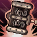
Hammer CrushLv. 42
Attacks the enemy with 487 power stunning them for 9 sec. Requires a blunt weapon. Ignores Shield Defense. Critical. Over-hit.
Base success rate: 70% Attack type: Stun (Physical)
Jump AttackLv. 19
Makes a jump attacking the target and nearby enemies and dealing damage equal to 95% of P. Atk. For 5 sec., Speed -180. Requires a sword, a blunt weapon, a spear, a fist weapon, dual blunt weapons, or dual swords.
Base success rate: 60% Attack type: Slow (Physical)
Momentarily increases Momentum to its maximum level.
Relax
While sitting, recovers HP, MP and CP quickly. Can not be used in combat. Consumes 10 Relax Holy Water.
Riposte Stance
Parries and returns an attack using a weapon. Reflects 30% of received damage, also reflects buff/ de-buff with a 30% chance. Speed -10%, Atk. Spd. -20%, and P. Accuracy -4. Continuously consumes MP proportionately to your level.
Sonic Barrier
For 10 sec., makes you invincible from basic attacks, skills, and debuffs. Requires dual swords. Requires Momentum Lv. 5.
<font color="B09B79">Type: Invincibility.</font> Immunity to damage and debuffs.
Sonic BlasterLv. 42
Hurls a deadly energy blast with 369 power. Consumes up to 2 Momentum to increase damage. Requires a sword, a blunt weapon, or dual swords. Critical. Over-hit.
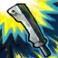
Sonic BusterLv. 39
Hurls a powerful burst of energy at enemies in the front with 111 power. Consumes up to 2 Momentum to increase damage. Requires a sword, a blunt weapon, or dual swords. Consumes 3 Momentum Stones. Critical. Over-hit.
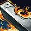
Sonic FocusLv. 8
Channels Momentum. Requires a sword, a blunt weapon or dual swords. Can be charged up to Lv. 1.
Sonic MoveLv. 2
Creates a Momentum blast. For 15 sec., Speed +40. Requires Momentum Lv. 2. Requires dual swords.
Sonic RageLv. 22
Attacks the target with the sword energy decreasing their P. Def. and absorbing Momentum. Power 0. Requires a sword, a blunt weapon, a fist weapon, dual blunt weapons or dual swords.
Base success rate: 70%
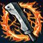
Sonic StormLv. 51
Attacks the target and nearby enemies with 155 power. Requires a sword, a blunt weapon, a spear, a fist weapon, dual blunt weapons or dual swords. Critical. Over-hit.
Triple SlashLv. 42
Attacks the enemy with 517 power. Requires dual swords. Ignores Shield Defense. Critical. Over-hit.
Triple Sonic SlashLv. 41
Accumulates Momentum to attack the target with 38,441 power. Damage increases as Momentum is used up. Damage +30% when Momentum is maxed up to 3. Requires a sword, a blunt weapon, a spear, a fist weapon, dual blunt weapons or dual swords.
Vicious StanceLv. 20
Critical Damage for basic attacks +35. MP Consumption depends on your level.
War CryLv. 2
For 1 min., P. Atk. +20%.
War FrenzyLv. 3
Confusion Resistance +5, Stupor Resistance +10. MP Consumption depends on your level.
Weapon Blockade
Blocks the enemy's weapon for 6 sec.: P. Atk./ M. Atk. -20%, Atk. Spd./ Casting Spd. -10%. The weapon is not removed. Requires Momentum Lv. 2. Requires dual swords.
Base success rate: 70% Inflicted status: Obstruction (Disarm).
Archer's Will
When using a bow or a crossbow, P. Accuracy +8, range +50. Increases P. Skill Power and Critical Rate for basic attacks on attack.
Armor MasteryLv. 5
P. Def. +13, MP Recovery Rate +10%. Additionally, P. Evasion +3 when using light armor.
Boost HPLv. 3
Max HP +60.
CrystallizeLv. 3
Allows you to crystallize B-grade equipment.
Dual Weapon MasteryLv. 37
P. Atk. +23.7 when using dual swords.
Expose Vulnerability
Gives flesh and takes bones. Decreases the enemy's P. Def. by exposing their weakness when hit. Increases Critical Rate for basic attacks.
Fighter's Will
When using a melee weapon, P. Atk. +100, Atk. Spd. +10%. Increases P. Skill Power and Critical Rate for basic attacks on attack.
Final FrenzyLv. 14
When HP < 30%, P. Atk. +32.9.
Heavy Armor MasteryLv. 50
When using heavy armor, P. Def. +1.9.
Light Armor MasteryLv. 50
When using light armor, P. Def. +4.2, P. Evasion +3.
Master of Combat
Max HP +1%, Max CP +2%.
Protection of Alignment
Resistance to tendency attributes +20. When damage is incurred, has a chance of additionally increasing M. Def. and Resistance to elemental attributes momentarily.
Protection of Elemental
Resistance to elemental attributes +20. When damage is incurred, has a chance of additionally increasing M. Def. and Resistance to elemental attributes momentarily.
Protection of Rune
M. Def. +15%. When damage is incurred, has a chance of additionally increasing M. Def. and Attribute Resistance momentarily.
Quick HP RecoveryLv. 8
HP Recovery Rate +1.1.
Skill Mastery
With a certain chance, resets skill cooldown or doubles its duration. The effect is based on STR.
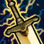
Sonic MasteryLv. 8
Absorbs the target's Momentum with a 15% chance on a basic physical attack and a 30% chance on a critical attack. Requires a sword, a blunt weapon or dual swords. Absorbs Momentum up to Lv. 1.
Sword / Blunt Weapon MasteryLv. 45
When using a sword or a blunt weapon, P. Atk. +4.5.
Vital ForceLv. 2
Lets you recover quicker while sitting. HP Recovery Rate +1.9, MP Recovery Rate +1.9.
Weapon MasteryLv. 3
P. Atk. +8.5% and additionally +2.
Adventurer
Othell Adventurer · 1 new skills on Project4
The Adventurer is a versatile rogue who thrives in high-stakes combat and unpredictable situations. Armed with agility and precision, this class excels at critical strikes, evasion, and stealth tactics. The Adventurer uses deadly daggers and lethal skills to outmaneuver enemies, making them a formidable force in both PvE and PvP encounters. With a perfect balance of speed, finesse, and survivability, they are able to navigate dangerous battlegrounds, evade lethal blows, and strike when the enemy least expects it.
Clear MovementsNew
Hide/ Shadow Step Resets cooldowns.
Accuracy
P. Accuracy +3. MP Consumption depends on your level.
BackstabLv. 37
Strikes the enemy from the back. Power 1107. In case of success, deals damage ignoring the enemy's CP. Requires a dagger or dual daggers. Critical. Over-hit.
BleedLv. 11
For 20 sec., the enemy's Speed -20%. Inflicts Bleed causing them to lose 50 HP per sec. Requires a dagger or dual daggers.
Base success rate: 70% Attack type: Bleed (Physical)
BluffLv. 6
Tricks the enemy into showing their back, stunning them for 5 sec. and making them unwilling to attack you. Cancels the enemy's target. Requires a dagger.
Base success rate: 70% Attack type: Bluff (Magic)
Critical HitLv. 15
Attacks the target's vital points with 1832 power. For 15 sec., Vital Point Attack Rate +10%. Requires a dagger. Over-hit.
Critical WoundLv. 14
For 30 sec., the target's received Critical Damage from basic attacks +35%, received Critical Rate from basic attacks +10%. Requires a dagger or dual daggers.
Base success rate: 70%
Dagger ExplosionLv. 6
Detonates a blade to attack nearby monsters with 962 Power added to P. Atk. PvE only. Requires a dagger/ dual dagger. Over-hit. Critical.
DashLv. 2
For 15 sec., Speed +40.
Deadly BlowLv. 42
Attacks the target's vital points with 1107 power. Requires a dagger. Over-hit.
Dual BlowLv. 6
Attempts to strike at the enemy's vital points. Additional P. Atk. power +11,234. Critical. Over-hit. Requires dual daggers.
Escape Shackle
Allows you to escape from a captured state.
Exciting Adventure
Grants a feeling of the extreme excitement in a melee. For 30 sec., Speed +20, P. Evasion +15, Vital Point Attack Rate + 30%, P. Skill Evasion +40%, Buff Cancel Resistance +90.
Fake Death
Plays dead to keep a monster from attacking. Consumes 10 MP per second.
Find Trap
Detects traps below Level 78.
Focus Chance
For 2 min., Critical Rate for basic attacks at the front -30%, Critical Rate for basic attacks from the flanks +30%, Critical Rate for basic attacks from behind +60%. Requires a dagger.
Focus Death
For 2 min., Critical Rate for basic attacks -30%, Critical Damage for basic attacks at the front -30%, Vital Point Attack Rate +60%, Critical Damage for basic attacks from behind +90%. Requires a dagger.
Focus Power
For 2 min., Critical Damage for basic attacks at the front -30%, Critical Damage for basic attacks from the flanks +30%, Critical Damage for basic attacks from behind +60%. Requires a dagger.
Focus Skill Mastery
Skill trigger rate +100%, P. Skill Power +10%. MP Consumption is based on your level.
Hide
Hides you from enemies. Speed -30%. The effect is cancelled if any action other than movement is initiated. The skill cooldown is fixed.
Lethal BlowLv. 6
Attacks the target's vital points with 5773 power. Requires a dagger. Over-hit.
Lure
Quietly lures the enemy.
Attack type: Confusion
Mirage
For 1 min., provides a chance to cancel the target of an attacking enemy.
Relax
While sitting, recovers HP, MP and CP quickly. Can not be used in combat. Consumes 10 Relax Holy Water.
Remove Trap
Disarms traps below Level 78.
Sand BombLv. 15
Detonates a sand bomb. For 30 sec., the enemy's P. Accuracy -6.
Base success rate: 70%
Shadow Step
Allows user to stealthily approach the enemy from behind. Target cancel is possible.
Silent Move
Makes you invisible for monsters. Speed -40%. Consumes MP while active.
StealthLv. 3
Prevents being pre-emptively attacked by monsters for 2 min.. P. Evasion 12, P. Def. -45%, M. Def. -45%, P. Accuracy -12 and P. Atk. -45%.
SwitchLv. 14
Confuses the enemy cancelling their target.
Attack type: Confusion
Throw DaggerLv. 6
Attacks the enemy by throwing a dagger with 3488 power. For 10 sec., Speed -80%. Requires a dagger. The skill cooldown is fixed.
Base success rate: 70% Attack type: Slow (Magic)
TrickLv. 12
Makes the enemy stop attacking you and lose their target.
Attack type: Confusion
Ultimate EvasionLv. 2
For 30 sec., Evasion +20, P. Skill Evasion +25%, Buff Cancel Resistance +80.
VeilLv. 19
Blurs the enemy's vision preventing them from targeting you for 2 min.
Base success rate: 70% Attack type: Confusion (Magic)
Vicious StanceLv. 20
Critical Damage for basic attacks +35. MP Consumption depends on your level.
Acrobatic MoveLv. 3
P. Evasion +4 when running.
AcrobaticsLv. 2
Maximum height user can fall without taking damage +60.
Archer's Will
When using a bow or a crossbow, P. Accuracy +8, range +50. Increases P. Skill Power and Critical Rate for basic attacks on attack.
Armor MasteryLv. 5
P. Def. +13, MP Recovery Rate +10%. Additionally, P. Evasion +3 when using light armor.
Assassination
When using a dagger, P. Atk. +70, Vital Point Attack Rate +3%.
Attack Speed BoostLv. 3
Atk. Spd. +5%.
Boost BreathLv. 2
Breath gauge +180.
Boost EvasionLv. 3
P. Evasion +2.
Critical DamageLv. 6
Critical Damage for basic attacks +32
Critical RateLv. 3
Critical Rate for basic attacks +20%.
CrystallizeLv. 3
Allows you to crystallize B-grade equipment.
Dagger MasteryLv. 45
When using a dagger, P. Atk. +20.3. Increases your mastery with daggers.
Dual Dagger Mastery
When using dual daggers, P. Atk. +87.7, Vital Point Attack Rate +5%.
EspritLv. 8
Lets you recover quicker while running. HP Recovery Rate +2.5, MP Recovery Rate +1.8.
Evasion Haste
During Evasion, increases your Atk. Spd.
Expose Vulnerability
Gives flesh and takes bones. Decreases the enemy's P. Def. by exposing their weakness when hit. Increases Critical Rate for basic attacks.
Fighter's Will
When using a melee weapon, P. Atk. +100, Atk. Spd. +10%. Increases P. Skill Power and Critical Rate for basic attacks on attack.
Light Armor MasteryLv. 47
P. Def. +1.3, P. Evasion +4, received Critical Rate from basic attacks -15%.
Long Shot
Bow and crossbow range +200.
Protection of Alignment
Resistance to tendency attributes +20. When damage is incurred, has a chance of additionally increasing M. Def. and Resistance to elemental attributes momentarily.
Protection of Elemental
Resistance to elemental attributes +20. When damage is incurred, has a chance of additionally increasing M. Def. and Resistance to elemental attributes momentarily.
Protection of Rune
M. Def. +15%. When damage is incurred, has a chance of additionally increasing M. Def. and Attribute Resistance momentarily.
Quick StepLv. 2
Speed +7
Sixth Sense
When stamina is at its limit, sensation reaches its peak. P. Evasion +15 when HP < 30%.
Skill Mastery
With a certain chance, resets skill cooldown or doubles its duration. The effect is based on STR.
Vital ForceLv. 8
Lets you recover quicker while sitting. HP Recovery Rate +1.9, MP Recovery Rate +1.9.
Weapon MasteryLv. 3
P. Atk. +8.5% and additionally +2.
Sagittarius
Yul Sagittarius · 5 new skills on Project4
The Sagittarius is a master archer renowned for their unparalleled precision and long-range lethality. Specializing in powerful ranged attacks, they excel at dealing consistent, high burst damage from a safe distance. With excellent accuracy and critical hit potential, the Sagittarius dominates both in PvE and PvP, taking down enemies before they can even approach. Their superior marksmanship, combined with skills that increase mobility and offensive output, makes them a fearsome presence on the battlefield.
Dead Eye StanceNew
For 2 min., when using a bow or crossbow, P. Atk. +124, basic attack Critical Damage +10%, Atk. Spd. -10%. When attacked, with a certain chance gives the party P. Atk. and M. Atk. +3% for 30 sec. Only 1 Stance can be active at a time and all Stances share the same cooldown. Requires a bow or crossbow.
Hawk StanceNew
For 2 min., when using a bow or crossbow, P. Evasion +14, M. Evasion +14, Skill Evasion +6%, Speed +10, P. Accuracy +8, P. Atk. -10%. When attacked, with a certain chance gives the party Speed +10 for 30 sec. Only 1 Stance can be active at a time and all Stances share the same cooldown. Requires a bow or crossbow.
Rapid Fire StanceNew
For 2 min., when using a bow or crossbow, P. Atk. +62, Atk. Spd. +10%, P. Skill Power -5%, attack range and skill range -200. When attacked, with a certain chance gives the party Atk. Spd. and Casting Spd. +3% for 30 sec. Only 1 Stance can be active at a time and all Stances share the same cooldown. Requires a bow or crossbow.
Sniping StanceNew
For 2 min., when using a bow or crossbow, attack range and skill range +200, Stun Atk. Rate +10%, Speed -12. When attacked, with a certain chance gives the party P. Atk. and M. Atk. +3% for 30 sec. Only 1 Stance can be active at a time and all Stances share the same cooldown. Requires a bow or crossbow.
Trigger StanceNew
For 2 min., when using a bow or crossbow, P. Skill Power +5%, P. Skill Cooldown -10%, Atk. Spd. -10%. When attacked, with a certain chance gives the party HP and MP Recovery Rate +15 for 30 sec. Only 1 Stance can be active at a time and all Stances share the same cooldown. Requires a bow or crossbow.
Accuracy
P. Accuracy +3. MP Consumption depends on your level.
Arrow RainLv. 6
Causes arrows to rain down from the sky with 7043 power. For 10 sec., deals Wind damage to the enemies making them lose 300 HP per sec. Requires a bow or crossbow. Critical. Over-hit.
Binding TrapLv. 8
Summons a trap to ensnare the enemy. The skill cooldown is fixed.
Blaze
Cancels the targeting of nearby enemies. For 5 sec. Speed +50. Prevents you from being targeted.
Burst ShotLv. 36
PvE only.
Confusion Decoy
Summons a decoy that receives attacks for you.
Death StingLv. 6
Shoots an arrow to kill. Attacks the enemy with 24306 Power added to P. Atk. Over-hit possible. Critical hit possible. Requires a bow/ crossbow to be equipped. The skill cooldown is fixed.
Detection
Finds any enemies hidden nearby.
Double ShotLv. 42
Shoots 2 arrows in succession to attack the enemy with 984 power. Requires a bow or crossbow. Critical. Over-hit.
Evade ShotLv. 6
Attacks the enemy with 2020 power. P. Evasion +6 for 30 sec. Requires a bow or crossbow. Over-hit.
Flash TrapLv. 5
Summons a Trap which Stuns nearby targets momentarily with intense light. Cancels target. The skill cooldown is fixed.
Focus Skill Mastery
Skill trigger rate +100%, P. Skill Power +10%. MP Consumption is based on your level.
Hamstring ShotLv. 6
Shoots an arrow at the enemy with 1973 power. For 1 min., the enemy's Speed -30%. Requires a bow or crossbow. Critical. Over-hit.
Base success rate: 70% Attack type: Slow (Magic)
Lethal ShotLv. 6
Shoots a deadly arrow that pierces the target with 7698 power. Requires a bow or crossbow. Critical. Over-hit.
MultishotLv. 6
Attacks multiple enemies with 11,030 power. Requires a bow or a crossbow. Critical. Over-hit. The skill cooldown is fixed.
Pain of Sagittarius
Sacrifices your HP to recover 500 MP.
Real TargetLv. 9
For 30 sec., Bow Resistance -12%, Crossbow Resistance -16%.
Relax
While sitting, recovers HP, MP and CP quickly. Can not be used in combat. Consumes 10 Relax Holy Water.
Seven ArrowLv. 6
Shoots 7 arrows to attack the enemy with 11,440 power. Critical. The skill cooldown is fixed.
Slow TrapLv. 6
Summons a trap that slows nearby enemies. The skill cooldown is fixed.
Stun ShotLv. 45
Fires arrows with 344 power stunning the enemy for 9 sec. Requires a bow or crossbow. Cancels the enemy's target. Over-hit.
Base success rate: 70% Attack type: Stun (Physical)
Ultimate Evasion
For 30 sec., Evasion +20, P. Skill Evasion +25%, Buff Cancel Resistance +80.
Vicious StanceLv. 20
Critical Damage for basic attacks +35. MP Consumption depends on your level.
Acrobatic MoveLv. 3
P. Evasion +4 when running.
Acrobatics
Maximum height user can fall without taking damage +60.
Archer's Will
When using a bow or a crossbow, P. Accuracy +8, range +50. Increases P. Skill Power and Critical Rate for basic attacks on attack.
Archery
When using a bow or crossbow, P. Atk. +200, attack range +50.
Armor MasteryLv. 5
P. Def. +13, MP Recovery Rate +10%. Additionally, P. Evasion +3 when using light armor.
Attack Speed Boost
Atk. Spd. +5%.
Boost Breath
Breath gauge +180.
Boost Evasion
P. Evasion +2.
Bow MasteryLv. 52
When using a bow or crossbow, P. Atk. +10.3.
Critical DamageLv. 2
Critical Damage for basic attacks +32
Critical Rate
Critical Rate for basic attacks +20%.
CrystallizeLv. 3
Allows you to crystallize B-grade equipment.
EspritLv. 8
Lets you recover quicker while running. HP Recovery Rate +2.5, MP Recovery Rate +1.8.
Fighter's Will
When using a melee weapon, P. Atk. +100, Atk. Spd. +10%. Increases P. Skill Power and Critical Rate for basic attacks on attack.
Light Armor MasteryLv. 47
P. Def. +1.3, P. Evasion +4, received Critical Rate from basic attacks -15%.
Long ShotLv. 2
Bow and crossbow range +200.
Protection of Alignment
Resistance to tendency attributes +20. When damage is incurred, has a chance of additionally increasing M. Def. and Resistance to elemental attributes momentarily.
Protection of Elemental
Resistance to elemental attributes +20. When damage is incurred, has a chance of additionally increasing M. Def. and Resistance to elemental attributes momentarily.
Protection of Rune
M. Def. +15%. When damage is incurred, has a chance of additionally increasing M. Def. and Attribute Resistance momentarily.
Quick StepLv. 2
Speed +7
Quiver of HoldingLv. 3
Weight limit +30%.
Skill Mastery
With a certain chance, resets skill cooldown or doubles its duration. The effect is based on STR.
Vital ForceLv. 8
Lets you recover quicker while sitting. HP Recovery Rate +1.9, MP Recovery Rate +1.9.
Weapon MasteryLv. 3
P. Atk. +8.5% and additionally +2.
Archmage
Feoh Archmage · 1 new skills on Project4
The Archmage is the ultimate master of elemental magic, capable of wielding immense destructive power. Specializing in fire elemental forces, the Archmage excels in dealing high area-of-effect damage, decimating groups of enemies with powerful spells. Their role on the battlefield is to obliterate opponents with overwhelming magical attacks while controlling the flow of combat with spells that burn, freeze, and stun. With superior magical knowledge, the Archmage dominates from a distance, making them a critical offensive force in any team composition.
Flame ExplosionLv. 6New
Inflicts fire damage with 108 Power added to M. Atk. Absorbs 40% of the damage as HP.
Arcane ChaosLv. 6
For 30 sec., the target's Buff Cancel Resistance -30%, Debuff Resistance -30%, drains 24 MP per sec. P. Skill MP Consumption +10%, M. Skill MP Consumption +30%, Song/ Dance MP Consumption +10%.
Base success rate: 70%
Arcane Power
Maximizes spells' efficiency. M. Atk. +30%, MP Consumption +10%. Consumes 30 HP per sec.
Arcane Shield
For 10 sec., received damage -70%, blocks the rest by consuming MP. The effect is cancelled when MP drops to 0. The skill cooldown is fixed.
Aura BlastLv. 6
Inflicts magic non-attribute damage on the target and nearby enemies with 141 power and recovers MP. Inflicts additional non-attribute damage with 58 power to monsters.
Aura BoltLv. 19
Inflicts magic damage on the nearest enemy with 26 power.
Aura CannonLv. 6
Inflicts non-attribute damage on the enemy with 178 Power added to M. Atk. and recovers MP. Inflicts additional non-attribute damage with 124 Power if the target is a monster.
Aura FlareLv. 33
Inflicts magic damage on the nearest enemy with 39 power. For 3 sec., PvP M. Def. +50%.
Aura FlashLv. 10
Attacks enemies with 2 power cancelling their targets. Consumes 49 Spirit Ore.
Aura SymphonyLv. 6
Inflicts non-attribute damage on the enemy with 150 Power added to M. Atk.
Blazing CircleLv. 24
Spreads ring-shaped flames to inflict fire damage on nearby enemies with 29 power.
Body to MindLv. 5
Sacrifices your HP to recover 70 MP.
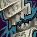
CancelLv. 12
Removes one or several of the target's buffs.
Corpse Life DrainLv. 2
HP Recovery from absorbing residual life energy from a corpse.
Count of FireLv. 6
Uses the power of Fire to burn the enemy for 10 sec. making them lose 173 HP per sec.
Base success rate: 70%
Curse FearLv. 19
Inflicts Fear on the enemy forcing them to flee for 9 sec.
Base success rate: 70% Attack type: Fear (Magic)
Curse PoisonLv. 12
Poisons the target making them lose 21 HP per sec. for 30 sec.
Base success rate: 70% Attack type: Poison (Physical)
DecayLv. 9
Makes the enemy rot from inside making them lose 102 HP per sec. for 15 sec.
Base success rate: 70%
Elemental AssaultLv. 6
Inflicts magic damage on the nearest enemy with 200 power. Over-hit.
Enlightenment
For 20 sec., M. Atk. +40%, Casting Spd. +50%, M. Skill Critical Rate +50%. MP Consumption -90%. The skill cooldown is fixed.
Fire Stance
Fire Attack +20. Imbues the spell with the Fire attribute.
Fire VortexLv. 6
Creates a vortex that deals 154 Fire damage in addition to M. Atk. Absorbs 25% of the damage as HP. For 30 sec., Speed -10%, Atk. Spd./ Casting Spd. -10%, Fire Resistance -20. Consumes 13.2 MP per sec.
Base success rate: 70%
Fire Vortex BusterLv. 6
Summons a fire hurricane to attack the target with 195 power.
Flaming Armor
Engulfs the user with a protective coat of fire. For 20 min. Fire Resistance +60. Inflicts burn damage on attacking enemies.
InfernoLv. 6
Uses Fire energy to deal 150 of Fire damage in addition to M. Atk. For 15 sec., the enemy's HP -60 per sec.
Magical Charge
Blinks you forward. Nearby enemies lose their target (70% chance). Shares its reuse with Magical Evasion.
Magical Evasion
Blinks you back. Nearby enemies lose their target (70% chance). Shares its reuse with Magical Charge.
MeteorLv. 6
Drops a meteor that deals heavy damage to the enemies in the effect area. Inflicts Fire damage. Power 117. Additionally, deals Fire damage over time for 10 sec.
Base success rate: 60%
Poisonous CloudLv. 11
Creates a toxic cloud that poisons nearby enemies for 30 sec. making them lose 24 HP per sec.
Base success rate: 60% Attack type: Poison (Physical)
ProminenceLv. 28
Deals fire magic damage to target with 49 Power added to M. Atk.
Rain of FireLv. 14
PvE only.
Relax
While sitting, recovers HP, MP and CP quickly. Can not be used in combat. Consumes 10 Relax Holy Water.
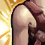
Self Heal
Restores your own HP. Power 107.
SleepLv. 47
Inflicts Sleep for 30 sec.
Base success rate: 70% Attack type: Sleep (Magic)
Sleeping CloudLv. 10
Inflicts Sleep on nearby enemies for 20 sec.
Base success rate: 60% Attack type: Sleep (Magic)
SlowLv. 20
For 1 min., the enemy's Speed -20%.
Base success rate: 70% Attack type: Slow (Magic)
Surrender to FireLv. 22
For 30 sec., the enemy's Fire Resistance -20, Water Resistance +10.
Base success rate: 70%
Volcano
Continuously inflicts powerful Fire damage. User cannot move while casting, and there is additional MP Consumption each time the effect occurs. Consumes 1 Magic Symbol. The skill cooldown is fixed.
Anti-magicLv. 45
M. Def. +14, Magic Damage Resistance +5%.
Arcane Roar
Fire/ Water/ Wind/ Earth Resistance +5, M. Atk. +3%.
M. Atk. +5%, Casting Spd. +5%, M. Skill Critical Rate +5%. MP Consumption -5%.
Mana BoostLv. 8
Max MP +30.
Mana Recovery
When using a robe, increases MP Recovery Rate.
Protection of Alignment
Resistance to tendency attributes +20. When damage is incurred, has a chance of additionally increasing M. Def. and Resistance to elemental attributes momentarily.
Protection of Elemental
Resistance to elemental attributes +20. When damage is incurred, has a chance of additionally increasing M. Def. and Resistance to elemental attributes momentarily.
Protection of Rune
M. Def. +15%. When damage is incurred, has a chance of additionally increasing M. Def. and Attribute Resistance momentarily.
Quick HP RecoveryLv. 6
HP Recovery Rate +1.1.
Quick Mana RecoveryLv. 7
MP Recovery Rate +1.1.
Quick RecoveryLv. 3
M. Skill Cooldown -10%.
Robe MasteryLv. 41
When using robes, P. Def. +1.7.
Sigil Mastery
When using a sigil, M. Atk. +4%, MP Recovery Rate +17%.
Skill Mastery
With a certain chance, resets skill cooldown or doubles its duration. The effect is based on INT.
Spellcraft
Increases Casting Spd. when equipped with a robe jacket and robe pants.
Weapon MasteryLv. 42
P. Atk. +1.5, M. Atk. +1.9.
Soultaker
Feoh Soultaker · 1 new skills on Project4
The Soultaker is a powerful dark mage who manipulates the forces of death and the undead to dominate the battlefield. Specializing in curses, life-stealing spells, and summoning the reanimated dead, this class excels at draining enemies of their vitality while empowering themselves. With strong magical attacks and debuffs, the Soultaker is capable of weakening foes over time while unleashing devastating dark magic. Their role revolves around outlasting opponents by controlling life force, crippling enemies, and commanding minions to assist in combat.
Void ExplosionLv. 6New
Inflicts dark damage with 108 Power added to M. Atk. Absorbs 40% of the damage as HP.
AnchorLv. 18
Gradually makes the enemy's body frozen for 5 sec. After that inflicts Paralysis for 5 sec.
Base success rate: 70% Attack type: Paralysis (Magic)
Arcane Power
Maximizes spells' efficiency. M. Atk. +30%, MP Consumption +10%. Consumes 30 HP per sec.
Arcane Shield
For 10 sec., received damage -70%, blocks the rest by consuming MP. The effect is cancelled when MP drops to 0. The skill cooldown is fixed.
Aura BurnLv. 13
Inflicts magic damage on the nearest enemy with 19 power.
BlazeLv. 4
Ignites flames on your body with 23 power, inflicting Fire damage on the enemy.
Body to MindLv. 5
Sacrifices your HP to recover 70 MP.
Corpse BurstLv. 20
PvE only. Blasts the target and nearby monsters with dark magic. Power 108.
Corpse Life DrainLv. 16
HP Recovery from absorbing residual life energy from a corpse.
Curse Death LinkLv. 27
Transfers your pain to the enemy. The lower your HP, the stronger the skill effect. Power 68.
Curse DiseaseLv. 9
For 2 min., the target's Received Healing -50%.
Base success rate: 70%
Curse FearLv. 19
Inflicts Fear on the enemy forcing them to flee for 9 sec.
Base success rate: 70% Attack type: Fear (Magic)
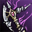
Curse of AbyssLv. 6
For 30 sec., enemy's Speed -10%, P. Def. -30%, Evasion -6, M. Atk. -30%, Casting Spd. -20%, M. Skill Critical Rate -30%.
Curse of ChaosLv. 20
For 30 sec., the enemy's P. Accuracy -9.
Base success rate: 70%
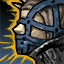
Curse of DoomLv. 6
Blocks the enemy's P./ M. skills for 1 min.
Base success rate: 70% Attack type: Silence (Magic)
Curse of WeaknessLv. 24
For 30 sec., the enemy's P. Atk. -17%.
Base success rate: 70%
Dark Stance
Dark Attack +20. Imbues the spell with the Dark attribute.
Dark VortexLv. 6
Creates a vortex that deals 154 Dark damage in addition to M. Atk. Absorbs 25% of the damage as HP. For 30 sec., Speed -10%, Atk. Spd./ Casting Spd. -10%, Dark Resistance -20. Consumes 13.2 MP per sec.
Base success rate: 70%
Day of Doom
Creates a seal that applies a powerful curse that decreases all stats of nearby enemies. The effect disappears upon leaving the skill range. Consumes 1 Magic Symbol. The skill cooldown is fixed.
Death SpikeLv. 13
Throws a bone to inflict dark damage on the enemy with 58 Power added to M. Atk.
Enlightenment
For 20 sec., M. Atk. +40%, Casting Spd. +50%, M. Skill Critical Rate +50%. MP Consumption -90%. The skill cooldown is fixed.
Gehenna
Continuously inflicts powerful dark damage. User cannot move while casting, and there is additional MP Consumption each time the effect occurs. Consumes 1 Magic Symbol. The skill cooldown is fixed.
Mass Curse FearLv. 10
Inflicts Fear on nearby enemies forcing them to flee for 10 sec.
Base success rate: 60% Attack type: Fear (Magic)
Mass SlowLv. 19
For 1 min., nearby enemies' Speed -30%.
Base success rate: 60% Attack type: Slow (Magic)
MeteorLv. 6
Drops a meteor that deals heavy damage to the enemies in the effect area. Inflicts Fire damage. Power 117. Additionally, deals Fire damage over time for 10 sec.
Base success rate: 60%
Poisonous CloudLv. 11
Creates a toxic cloud that poisons nearby enemies for 30 sec. making them lose 24 HP per sec.
Base success rate: 60% Attack type: Poison (Physical)
Relax
While sitting, recovers HP, MP and CP quickly. Can not be used in combat. Consumes 10 Relax Holy Water.
Self Heal
Restores your own HP. Power 107.
Servitor HealLv. 12
Recovers servitor's HP with 169 power.
Servitor RechargeLv. 6
Recovers the servitor's MP with up to 41 Power depending on the servitor's level.
SilenceLv. 19
Blocks the target's M. skills for 1 min.
Base success rate: 70% Attack type: Silence (Magic)
SleepLv. 47
Inflicts Sleep for 30 sec.
Base success rate: 70% Attack type: Sleep (Magic)
Summon Corrupted ManLv. 6
Summons Corrupted Man. Consumes 1 Spirit Ore.
Summon Cursed ManLv. 7
Summons Cursed Man. Consumes 1 Spirit Ore.
Summon Reanimated ManLv. 7
Summons a Reanimated Man. Requires 3 Spirit Ore.
Surrender to DarkLv. 23
For 30 sec., the enemy's Dark Resistance -25, Holy Resistance +12.
Base success rate: 70%
Transfer PainLv. 5
Transfers 10% of received damage to a servitor. MP Consumption depends on your level.
Vampiric MistLv. 6
Summons deadly fog that deals dark damage to nearby enemies with 117 power. Absorbs 20% of inflicted damage as HP. For 10 sec., enemies' Speed/ P. Atk./ Atk. Spd. -50%, P. Accuracy -12.
Base success rate: 60%
Anti-magicLv. 45
M. Def. +14, Magic Damage Resistance +5%.
Armor MasteryLv. 3
P. Def. +6.7.
CrystallizeLv. 3
Allows you to crystallize B-grade equipment.
Fast SpellcastingLv. 3
Casting Spd. +5%.
Higher Mana GainLv. 27
Increases MP Recovery Rate.
Magician's Movement
Increases Atk. Spd., when using robe.
Magician's Will
M. Atk. +5%, Casting Spd. +5%, M. Skill Critical Rate +5%. MP Consumption -5%.
Mana BoostLv. 8
Max MP +30.
Mana Recovery
When using a robe, increases MP Recovery Rate.
Necromancy
Dark Resistance +10, M. Atk. +3%.
Protection of Alignment
Resistance to tendency attributes +20. When damage is incurred, has a chance of additionally increasing M. Def. and Resistance to elemental attributes momentarily.
Protection of Elemental
Resistance to elemental attributes +20. When damage is incurred, has a chance of additionally increasing M. Def. and Resistance to elemental attributes momentarily.
Protection of Rune
M. Def. +15%. When damage is incurred, has a chance of additionally increasing M. Def. and Attribute Resistance momentarily.
Quick HP RecoveryLv. 6
HP Recovery Rate +1.1.
Quick Mana RecoveryLv. 7
MP Recovery Rate +1.1.
Quick RecoveryLv. 3
M. Skill Cooldown -10%.
Robe MasteryLv. 41
When using robes, P. Def. +1.7.
Sigil Mastery
When using a sigil, M. Atk. +4%, MP Recovery Rate +17%.
Skill Mastery
With a certain chance, resets skill cooldown or doubles its duration. The effect is based on INT.
Spellcraft
Increases Casting Spd. when equipped with a robe jacket and robe pants.
Weapon MasteryLv. 42
P. Atk. +1.5, M. Atk. +1.9.
Hierophant
Iss Hierophant · 16 new skills on Project4
The Hierophant is a versatile support class that excels not only in empowering their allies with potent offensive buffs but also in weakening their enemies with devastating debuffs. Their unique ability to switch between different playstyles makes them adaptable to various combat scenarios, whether focusing on strengthening their team or disrupting the enemy. Known for their advanced group buffs, the Hierophant can significantly enhance the combat effectiveness of their party, while their escape tactics and crowd control skills make them essential in both PvP and PvE encounters. Mastering this class offers a dynamic gameplay experience, allowing players to shift between support, offensive, and strategic roles.
Berserker SpiritLv. 2New
For 1 min., party members' P. Atk. +8%, M. Atk. +16%, Atk. Spd./ Casting Spd. +8%, Speed +8, P. Def. -8%, M. Def. -16%, P. Evasion -4. Only one buff of this kind at a time (Pa'agrio's Rage, Berserker Spirit, Shield, Magic Barrier, chants...). Cooldown 5 min.
Divine ShieldNew
For 10 sec., P. Def. +25%, M. Def. +25%.
Fatal CrushNew
A powerful strike. Attacks the target with 5500 power. Ignores Shield Defense. Requires a sword, a blunt weapon, dual swords or dual blunt weapons.
Hammer of FaithNew
Strikes the target with 2500 power and knocks them down for 2 sec. Requires a sword, a blunt weapon, dual swords or dual blunt weapons.
Base success rate: 70% Attack type: Knockdown (Physical)
Holy FuryNew
For 30 sec., P. Skill Power +20%.
Holy LeapNew
Leaps back 400 and stuns nearby enemies for 2 sec.
Base success rate: 80% Attack type: Stun (Physical)
Magic BarrierLv. 2New
For 1 min., party members' M. Def. +30%. Only one buff of this kind at a time (Pa'agrio's Rage, Berserker Spirit, Shield, Magic Barrier, chants...). Cooldown 5 min.
Prophecy of FireNew
For 1 min., party members' Max HP +10%, P. Accuracy +4, received Critical Damage -10%, P./ M. Def. +10%, Debuff Resistance +20, Speed -10%. Only one Prophecy / Chant of Victory at a time. Cooldown 5 min.
Prophet's WillNew
For 20 min., P. Atk. +15%, Atk. Spd. +8%.
ShieldLv. 2New
For 1 min., party members' P. Def. +15%. Only one buff of this kind at a time (Pa'agrio's Rage, Berserker Spirit, Shield, Magic Barrier, chants...). Cooldown 5 min.
Team BuildingNew
The target is unable to do anything for 3 sec.
The target is teleported to the selected place together with their party members. Applies <font color="FFFF00">Shield of Unity</font> to the teleported party members.
<font color="FFFF00">Shield of Unity</font> Duration: 30 sec. Effect: Creates a barrier with 30,000 HP + 50% of the caster's Max HP. The barrier disappears on reaching 0 HP or after blocking 5 attacks.
<font color="FF0000">Note!</font> Cannot be used in the Olympiad.
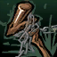
Word of SilenceLv. 6New
Silences the target for 4 sec.: M. skills cannot be used.
Base success rate: 70% Attack type: Silence (Magic)
Battle HealLv. 15
Momentarily recovers HP. Power 50.
Blessed SoulLv. 6
For 20 min., Max MP +10%.
Block ShieldLv. 6
Removes the P. Def. buffs of the target and up to 9 enemies around it. For 2 min., their P. Def. -10% and P. Def. buffs cannot be applied.
Base success rate: 80%
Block Wind WalkLv. 6
For 2 min., Speed -30% for the target and up to 9 enemies around it.
Base success rate: 80%
Chant of Combat
Attack chant: for 30 sec., party P. Atk. +6%, M. Atk. +6%. Only 1 attack and 1 defence chant can be active on a party member at a time.
Chant of FuryLv. 2
Attack chant: for 30 sec., party Atk. Spd. +8%, Casting Spd. +8%. Only 1 attack and 1 defence chant can be active on a party member at a time.
Chant of Guard
Defence chant: for 30 sec., party received P. Critical Damage -10%. Only 1 attack and 1 defence chant can be active on a party member at a time.
Chant of Vitality
Defence chant: for 30 sec., party Max HP +8%, HP Recovery +10%. Only 1 attack and 1 defence chant can be active on a party member at a time.
Crippling AttackLv. 20
Attacks a nearby target revealing their weak spot. Deals damage equal to 145% of your P. Atk. For 20 sec., marks the target: P. Def./ M. Def. -10%. Requires a sword, a blunt weapon, dual blunt weapons or dual swords.
Base success rate: 70%
Crushing AssaultLv. 20
Attacks surrounding enemies. Deals damage equal to 142% of your P. Atk. Requires a sword, a blunt weapon, dual blunt weapons or dual swords.
Dash AssaultLv. 18
Rushes to the enemy stunning them for 3 sec. Deals damage equal to 130% of your P. Atk. Requires a sword, a blunt weapon, dual blunt weapons or dual swords.
Base success rate: 70% Attack type: Stun
Devil's Movement
For 30 sec., party members are hidden from players and monsters, Speed -30%. Cancelled when a party member attacks, casts a skill or is hit. Shares the effect with Dance of Shadows.
Dryad Root
Holds the enemy in place for 5 sec.
Base success rate: 60% Attack type: Hold (Magic)
Enlightenment
For 20 sec., M. Atk. +10%, Casting Spd. +50%, Healing Power +40%, M. Skill Critical Rate +50%, MP Consumption -90%. The skill cooldown is fixed.
EraseLv. 10
Banishes the enemy's servitor to another dimension. Consumes 3 Spirit Ore.
Attack type: Confusion
Holy Weapon
For 20 min., your Holy Attack +20.
Mana BurnLv. 10
Burns up the enemy's MP with 117 power.
Mass Giant Root
Holds up to 8 enemies around the target in place for 5 sec.
Base success rate: 50% Attack type: Hold (Magic)
Mystic Immunity
For 10 sec., you are immune to debuffs. Only on yourself.
Quick EscapeLv. 14
Transforms you into a cute pig for 15 sec. P./ M. Def. +30%, Speed +30%.
Relax
While sitting, recovers HP, MP and CP quickly. Can not be used in combat. Consumes 10 Relax Holy Water.
ResurrectionLv. 2
Resurrects a corpse. Restores 20% of lost XP. The skill cooldown is fixed.
ReturnLv. 2
Teleports to the nearest village. Cannot be used in special places such as the GM Consultation Service.
Spell Turning
Disrupts a nearby target's casting, disrupting their spell.
Word of FearLv. 6
Inflicts Fear on up to 10 nearby enemies for 4 sec.
Base success rate: 50% Attack type: Fear (Magic)
Crusader Weapon MasteryNew
P. Atk. +130 when using dual swords or dual blunt weapons.
Pa'agrio's GripNew
When you hit an enemy, 5% chance to hold them in place for 3 sec. Cooldown 15 sec.
Prophet's GraceNew
When hit, 10% chance to trigger <font color="FF8000">Prophet's Grace</font> on you and your party members within 600: a barrier that absorbs damage equal to 8% of your Max HP (up to 5 hits) for 5 sec. and restores 3% of their Max HP. Cooldown 15 sec.
Tower ShieldNew
P. Def. +5%, M. Def. +5%.
Anti-magicLv. 45
M. Def. +14, Magic Damage Resistance +5%.
Archer's Will
When using a bow or a crossbow, P. Accuracy +8, range +50. Increases P. Skill Power and Critical Rate for basic attacks on attack.
Armor MasteryLv. 3
P. Def. +6.7.
Boost HPLv. 7
Max HP +60.
CrystallizeLv. 3
Allows you to crystallize B-grade equipment.
Divine Lore
M. Skill MP Consumption -5%.
Fighter's Will
When using a melee weapon, P. Atk. +100, Atk. Spd. +10%. Increases P. Skill Power and Critical Rate for basic attacks on attack.
Great Fury
When you use Crippling Attack, 30% chance to give your party Atk. Spd. +20% for 8 sec.
Heavy Armor MasteryLv. 33
When using heavy armor, P. Def. +14.8, Casting Spd. +68%, Atk. Spd. +25%.
Light Armor MasteryLv. 41
When using light armor, P. Def. +5.4, Casting Spd. +91%, Atk. Spd. +25%, MP Recovery Rate +20%.
Magician's Movement
Increases Atk. Spd., when using robe.
Magician's Will
M. Atk. +5%, Casting Spd. +5%, M. Skill Critical Rate +5%. MP Consumption -5%.
Mana BoostLv. 8
Max MP +30.
Mana Recovery
When using a robe, increases MP Recovery Rate.
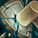
Penetrating Attack
With a certain chance, the enemy's P. Def. -23% on attack.
Protection of Alignment
Resistance to tendency attributes +20. When damage is incurred, has a chance of additionally increasing M. Def. and Resistance to elemental attributes momentarily.
Protection of Elemental
Resistance to elemental attributes +20. When damage is incurred, has a chance of additionally increasing M. Def. and Resistance to elemental attributes momentarily.
Protection of Rune
M. Def. +15%. When damage is incurred, has a chance of additionally increasing M. Def. and Attribute Resistance momentarily.
Quick HP RecoveryLv. 6
HP Recovery Rate +1.1.
Quick Mana RecoveryLv. 7
MP Recovery Rate +1.1.
Quick RecoveryLv. 3
M. Skill Cooldown -10%.
Skill Mastery
With a certain chance, resets skill cooldown or doubles its duration. The effect is based on INT.
Weapon MasteryLv. 42
P. Atk. +1.5, M. Atk. +1.9.
Arcana Lord
Wynn Arcana Lord · 16 new skills on Project4
The Arcana Lord is a powerful summoner who commands fearsome beasts to fight alongside them, offering a unique blend of magic and pet combat. Master of summon-based warfare, the Arcana Lord excels at overwhelming enemies through their minions, while using their own magic to control and enhance their pets. With strong utility and support abilities, they dominate the battlefield by leveraging both their magical prowess and the raw power of their summons to harass, disrupt, and overpower foes from a distance.
Curse of ExhaustionNew
For 10 sec., the target's Speed -40%. Only 1 Curse can be active at a time.
Base success rate: 80%
Curse of ShadowNew
For 10 sec., the target's M. Def. -15%, Dark and Fire Resistance -30. Only 1 Curse can be active at a time.
Base success rate: 80%
Curse of TonguesNew
For 10 sec., the target's Casting Spd. -30%. Only 1 Curse can be active at a time.
Base success rate: 80%
Death CoilNew
Drains the target's HP with 150 power, restoring 10% of the damage as your HP, and makes the target flee for 3 sec.
Base success rate: 70% Attack type: Fear (Magic)
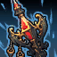
Demoness' AttackNew
Servitor skill (Demoness)
Demoness attacks the target from range with 15 power.
Drain ManaNew
For 20 sec., drains the target's MP with 15 Power per second. Absorbs 60% of the drained MP. Press Esc button to cancel the effect anytime.
Fel DominationNew
For 15 sec., your next servitor summon is cast in 1.5 sec.
Health FunnelNew
Sacrifices 800 of your HP to restore 1600 HP of your servitor.
NecromancerNew
Caster mode: sacrifices your servitor; curses and pets are replaced by necromancer magic (Death Spike, Vampiric Claw, Curse Death Link, Corpse Life Drain, Body To Mind, Dark Vortex, Surrender to Dark, Curse of Doom, Curse of Abyss, Day of Doom, Gehenna, Vampiric Mist, Corpse Burst) and your Destruction spells (Volcanic Destruction, Ruin, Rain of Fire, Death Coil, Drain Mana, Life Tap, Death Fear, Death Howl). Can be used only out of combat (15 sec. cast). Cancel the transformation to return.
Rain of FireNew
PvE only. Attacks the target and monsters around it with 160 Fire power. Hits monsters only (no damage to players).
Seed of CorruptionNew
Deals magic damage over time with 40 power to the target and enemies around it for 10 sec. Removes your own Curse of Agony, Siphon of Life and Breath of Death from the enemies it hits.
Base success rate: 70% Attack type: Poison (Magic)
Summon Banshee QueenNew
Summons a Banshee Queen (anti-caster, ranged): low damage. She gets 50% of your Max HP, P. Def. and M. Def. Pet skills: Spell Lock, Devour Magic. (36 sec. cast)
Summon DemonessNew
Summons a Demoness (crowd control): low damage. She gets 50% of your Max HP, P. Def. and M. Def. Pet skills: Lash of Pain, Seduction. (36 sec. cast)
Summon Grim ReaperNew
Summons a Grim Reaper that protects you (tank): low damage, high HP and defence. It also gets your Max HP, P. Def. and M. Def. Pet skills: Torment, Suffering. (36 sec. cast)
Breath of DeathLv. 10
HP -120 per sec. for 15 sec.. Increases enemy's Speed.
Base success rate: 70% Attack type: Poison
Crystal Form
Removes Poison/ Bleed/ Hold/ Stun. Makes you invincible for 5 sec. and rapidly recovers HP and MP.
<font color="B09B79">Type: Invincibility.</font> Immunity to damage and debuffs
Curse of AgonyLv. 18
Deals continuous magic damage to the target with 140 power for 10 sec. Additionally interrupts the target's skill casting.
Base success rate: 70% Attack type: Poison
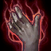
Curse of Dead Mind
For 10 sec reduce target's Received Healing by 30%. Decrease Speed by 20%. Only 1 curse can be active at a time.
Base success rate: 70%
Curse of RecklessnessLv. 20
Deals continuous magic damage to the target with 10% power for 40% Additionally decreases the target's P./ M. Def.
Base success rate: 70%
Death FearLv. 19
Inflicts Fear on the target for 8 sec. Speed -40%. Inflicting damage on the effected target has a chance to cancel the effect.
Base success rate: 70% Attack type: Fear (Magic)
Death HowlLv. 16
Attacks nearby enemies and knocking them back. Over-hit.
Base success rate: 60% Attack type: Stun
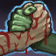
Demon Life Share
20% Damage taken by the summoner is shared with their Demon. MP Consumes Mp per 3 sec.
Drain Life
For 20 sec., drains target's life with 60 Power per second. Absorbs 60% of the damage inflicted as HP. Press Esc button to cancel the effect anytime.
Instant Teleport
Lets you teleport instantly. Consumes 1 Spirit Ore.
Life Tap
Sacrifices your own 384 HP to regenerate 400 MP. The skill cooldown is fixed.
Relax
While sitting, recovers HP, MP and CP quickly. Can not be used in combat. Consumes 10 Relax Holy Water.
Shadow Armor
For 20 min., Dark Resistance +60 and a chance to deal Dark damage to attacking enemies.
Siphon of LifeLv. 17
Deals continuous magic damage to the target with 22 power for 10 sec. Additionally recovers your HP and MP.
Base success rate: 70% Attack type: Poison
Summon Death Gate
For 10 sec., creates Danger Zone that pulls and immobilizes enemies around you.
Consumes 1 Spirit Ore.
Summon Demonic CrucifixLv. 13
Attacks the target and nearby enemies with 18 power. Additionally the target's Weapon P./ M. Atk. -30, Atk. Spd./ Casting Spd. -30%, Speed -180. Consumes 5 Spirit Ore.
Base success rate: 60%
Summon Friend
Teleports a party member to the caster's current location. Requires a Summoning Crystal on the target.
Summon Moving Portal
Summons an instant Moving Portal for 30 sec. Consumes 5 Spirit Ore.
Volcanic DestructionLv. 20
Attacks the target with 290 Fire power.
Demonic BondLv. 2New
Servitor skill (Grim Reaper)
Servitor passive: gets 50% of its master's Max HP, P. Def. and M. Def.
NightfallNew
Passive: every tick of Breath of Death has a 4% chance to give Shadow Trance (your next magic damage skill is cast instantly).
Anti-magicLv. 45
M. Def. +14, Magic Damage Resistance +5%.
Armor MasteryLv. 3
P. Def. +6.7.
CrystallizeLv. 4
Allows you to crystallize A-grade equipment.
Fast SpellcastingLv. 3
Casting Spd. +5%.
Higher Mana GainLv. 27
Increases MP Recovery Rate.
Magician's Will
M. Atk. +5%, Casting Spd. +5%, M. Skill Critical Rate +5%. MP Consumption -5%.
Mana BoostLv. 8
Max MP +30.
Mana Recovery
When using a robe, increases MP Recovery Rate.
Necromancy
Dark Resistance +10, M. Atk. +3%.
Protection of Alignment
Resistance to tendency attributes +20. When damage is incurred, has a chance of additionally increasing M. Def. and Resistance to elemental attributes momentarily.
Protection of Elemental
Resistance to elemental attributes +20. When damage is incurred, has a chance of additionally increasing M. Def. and Resistance to elemental attributes momentarily.
Protection of Rune
M. Def. +15%. When damage is incurred, has a chance of additionally increasing M. Def. and Attribute Resistance momentarily.
Quick HP RecoveryLv. 6
HP Recovery Rate +1.1.
Quick Mana RecoveryLv. 7
MP Recovery Rate +1.1.
Robe MasteryLv. 41
When using robes, P. Def. +1.7.
Skill Mastery
With a certain chance, resets skill cooldown or doubles its duration. The effect is based on INT.
Spellcraft
Increases Casting Spd. when equipped with a robe jacket and robe pants.
Superior Summon Mastery
Allows summoning a Servitor when summon points are below 2.
Weapon MasteryLv. 42
P. Atk. +1.5, M. Atk. +1.9.
Cardinal
Aeore Cardinal · 5 new skills on Project4
The Cardinal is the pinnacle of healing classes, providing unmatched restorative powers to keep their allies alive and in fighting shape. With powerful healing spells, resurrection abilities, and protective buffs, the Cardinal ensures their party's survival in the most intense battles. They specialize in sustaining groups through prolonged engagements, negating damage, and quickly reviving fallen comrades, making them essential in both PvE raids and PvP conflicts. Their role is to stand as the backbone of any group, offering unparalleled support and keeping their allies fighting at full strength.
Holy WeaponNew
Transformation skill
For 20 min., your Holy Attack +20. Ends when you leave the stance.
InquisitorNew
Healer hunting stance. Holy attack magic, Self Heal, Holy Weapon and Superior Inquisition, closed when you leave it. Only out of combat (15 sec. cast). Switch Stance (15 sec.) to return.
Superior InquisitionNew
Transformation skill
M. Atk. +30%, MP Consumption +10%. Consumes 30 HP per sec. M. Skill Power +1% per 30 Heal Power above 300 (max +10%), +1% per 5 MEN above 60 (max +8%) and +1% per 200 Max MP above 5000 (max +10%). Ends when you leave the stance.
Switch StanceNew
Transformation skill
Leaves the Inquisitor / Vanguard / Golem Armor stance (15 sec. cast).
Arcane Wisdom
Maximizes spells' efficiency. Casting Spd. -10%, MP Consumption -30%. Consumes 30 HP per sec.
Balance HealLv. 6
Equalizes the entire party's HP and restores 333 HP/ second for 15 sec.
Blessed ResurrectionLv. 4
Resurrects the target. Additionally, restores 85% XP. The skill cooldown is fixed.
Brilliant HealLv. 20
Recovers your HP and that of your nearby party members with 1191 power. If HP is full, recovers CP.
Brilliant PurgeLv. 7
Removes debuffs from all party members; for 10 sec., their Debilitation/ Confusion/ Obstruction/ Stupor/ Infection/ Petrification/ Pull/ Danger Zone Resistance +500. Additionally, P./ M. Def. +15%.
<font color="B09B79">Type: Debuff Resistance bonus.</font> Greatly increases Debuff Resistance. Does not stack with other effects of the following types: <font color="B09B79">Debuff Resistance bonus and Immunity to debuffs</font>.
Celestial Party ProtectionLv. 6
For 10 sec., grants invincibility to all party members. The identical effects do not stack. Also, applies <font color="ECECEC">Defense Limit</font> on the target.
<font color="B09B79">Type: Invincibility.</font> Immunity to damage and debuffs
<font color="ECECEC">Defense Limit</font> For 90 sec., Celestial Protection, Celestial Party Protection, and Celestial Aegis cannot be applied.
Celestial ProtectionLv. 6
For 10 sec., grants invincibility to a party member. The identical effects do not stack.
<You are targeted automatically>
<font color="B09B79">Type: Invincibility.</font> Immunity to damage and debuffs
Divine PowerLv. 6
For 15 sec., Healing Power +1000.
Divinity of EinhasadLv. 6
For 30 sec., M. Skill MP Consumption -30%. With a 100% chance, makes Radiant Heal, Panic Heal, and Brilliant Heal critical. Consumes 5 Spirit Ore.
Emblem of Salvation
Resurrects yourself fully recovered. Maintains buffs and debuffs even after death. Exceptions: Noblesse Blessing and Lucky Charm. The skill cooldown is fixed.
<You are targeted automatically>
EraseLv. 10
Banishes the enemy's servitor to another dimension. Consumes 3 Spirit Ore.
Attack type: Confusion
InvocationLv. 10
For 30 sec., P. Def. -90%. Recovers 54 MP per sec. The effect is cancelled when hit. The skill cooldown is fixed.
Life Balance
Equalizes HP of all party members.
Magical BackfireLv. 15
For 1 min., nearby enemies' M. Skill MP Consumption +200%.
Base success rate: 70%
Mana BurnLv. 10
Burns up the enemy's MP with 117 power.
Panic HealLv. 20
Recovers the target's HP with 1488 power. If HP is full, recovers CP.
<You are targeted automatically>
Party ResurrectionLv. 3
Resurrects all nearby party and clan members. Additionally, restores 100% XP. The skill cooldown is fixed.
PrayerLv. 8
For 20 min., all party members' Received Healing +8%.
Progressive HealLv. 6
Heals target and the 10 most injured allies around target by up to 24% of their Max HP. The recovery amount decreases starting from the most injured person.
Radiant HealLv. 20
Recovers the target's HP with 1488 power. If HP is full, recovers CP.
<You are targeted automatically>
Radiant PurgeLv. 6
Removes debuffs from the target. Does not work on enemies.
RebirthLv. 6
Fully recovers party members' HP/ MP/ CP and removes debuffs from them. The skill cooldown is fixed.
Relax
While sitting, recovers HP, MP and CP quickly. Can not be used in combat. Consumes 10 Relax Holy Water.
ReposeLv. 7
Decreases the undead's aggression.
Attack type: Confusion
Restore LifeLv. 9
Recovers 9% HP.
ResurrectionLv. 8
Resurrects a corpse. Restores 20% of lost XP. The skill cooldown is fixed.
Sublime Self-SacrificeLv. 6
Sacrifices oneself to allow all other party members to fully recover their HP/ MP/ CP and become invincible for 15 sec.
<font color="B09B79">Type: Invincibility.</font> Immunity to damage and debuffs
Summon Tree of Life
Summons Tree of Life. The summoned tree heals nearby party members for 60 sec. and removes debuffs from them. The Tree of Life cannot be targeted. The skill cooldown is fixed at 60 sec.
TranceLv. 15
Inflicts Sleep for 12 sec.
Base success rate: 70% Attack type: Sleep (Magic)
Turn to StoneLv. 6
For 8 sec., turns you to stone to avoid damage.
Heal Power MasteryNew
Heal Power +5 for each point of MEN. Heal Power increases the HP restored by your healing skills.
Anti-magicLv. 45
M. Def. +14, Magic Damage Resistance +5%.
Armor MasteryLv. 3
P. Def. +6.7.
CrystallizeLv. 3
Allows you to crystallize B-grade equipment.
Divine Lore
M. Skill MP Consumption -5%.
Fast SpellcastingLv. 3
Casting Spd. +5%.
Light Armor MasteryLv. 41
When using light armor, P. Def. +5.4, Casting Spd. +91%, Atk. Spd. +25%, MP Recovery Rate +20%.
Magician's Movement
Increases Atk. Spd., when using robe.
Magician's Will
M. Atk. +5%, Casting Spd. +5%, M. Skill Critical Rate +5%. MP Consumption -5%.
Mana BoostLv. 8
Max MP +30.
Mana Recovery
When using a robe, increases MP Recovery Rate.
Protection of Alignment
Resistance to tendency attributes +20. When damage is incurred, has a chance of additionally increasing M. Def. and Resistance to elemental attributes momentarily.
Protection of Elemental
Resistance to elemental attributes +20. When damage is incurred, has a chance of additionally increasing M. Def. and Resistance to elemental attributes momentarily.
Protection of Rune
M. Def. +15%. When damage is incurred, has a chance of additionally increasing M. Def. and Attribute Resistance momentarily.
Quick HP RecoveryLv. 6
HP Recovery Rate +1.1.
Quick Mana RecoveryLv. 7
MP Recovery Rate +1.1.
Quick RecoveryLv. 3
M. Skill Cooldown -10%.
Robe MasteryLv. 41
When using robes, P. Def. +7.2.
Skill Mastery
With a certain chance, resets skill cooldown or doubles its duration. The effect is based on INT.
Spellcraft
Increases Casting Spd. when equipped with a robe jacket and robe pants.